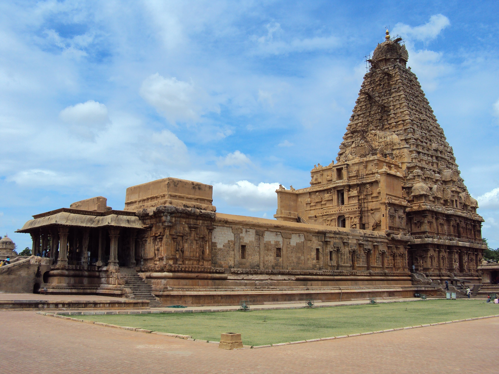
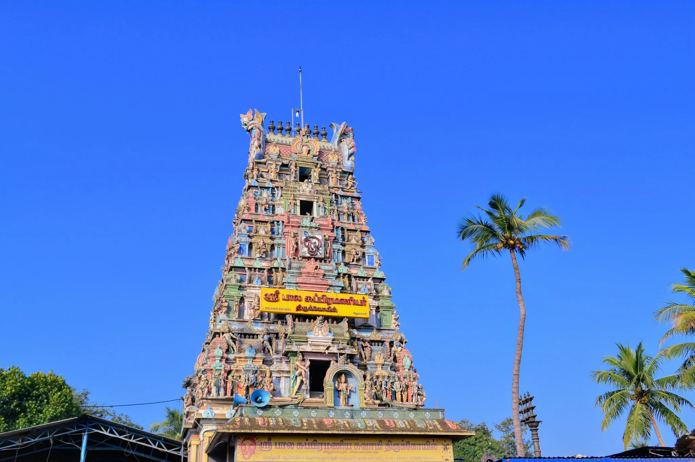
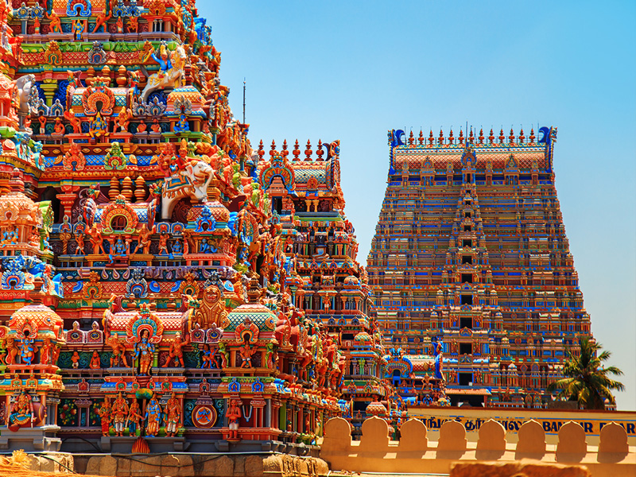
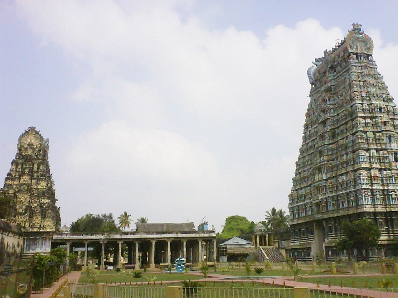

Top Temples in Tamil Nadu
Devotional and peace
Bala Subrahmanaya Temple
Ayikudy

Brihadeeswarar
Thanjavur
madurai meenakshi
Madurai
Sri lakshmi narayani
Thirumalaikodi

Siruvapuri Murugan
Siruvapuri
Ramanathaswamy
Rameswaram

Sri Ramanathaswamy
Srirangam
Kailasanathar
Karuppadithattadai

Sri Rajagopala Swamy
Mannargudi